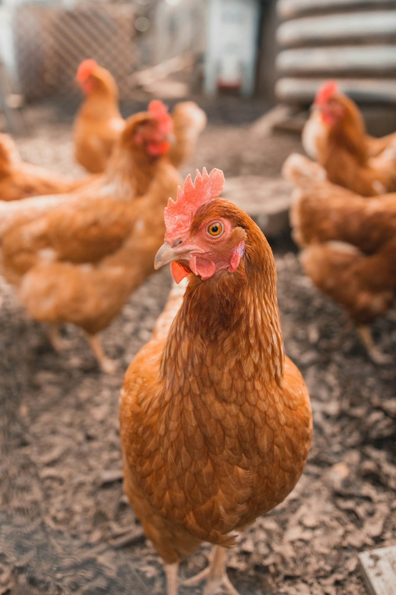

PENTERNAKAN AYAM
Ayam Kampung dan Ayam Penelur ADIRUL diternak menggunakan kaedah separa bebas yang mesra alam. Menghasilkan daging berserat halus yang manis serta telur organik berprotein tinggi.
HARGA
RM 22.00
per kg (Ayam Hidup / Siap Diproses)
- Anak ayam (DOC): RM 4.50 seekor
- Ayam Kampung Matang (1.5kg - 2.0kg): RM 32.00 seekor
- Diskaun pembelian borong untuk katering & pemborong
PENJAGAAN
- Makanan: Dedak berprotein tinggi dikombinasikan dengan jagung hancur dan herba semula jadi.
- Minuman: Bekalan air bersih bertapis dicampur vitamin dan probiotik harian.
- Kebersihan: Reban dibersihkan 2 kali seminggu; penyemburan disinfektan berkala.
- Kesihatan: Suntikan vaksin Newcastle Disease (ND) & Infectious Bronchitis (IB) teratur.
KAWASAN
- Lokasi Reban: Reban tertutup berudara segar dengan pencahayaan semula jadi yang mencukupi.
- Keperluan Ruang: 1 meter persegi untuk 8-10 ekor ayam dewasa.
- Suhu & Kelembapan: Suhu reban optiim 24°C - 30°C dengan saliran udara lancar.
- Persekitaran: Kawasan luar reban bertarahan tanah kering berumput untuk riadah ayam.